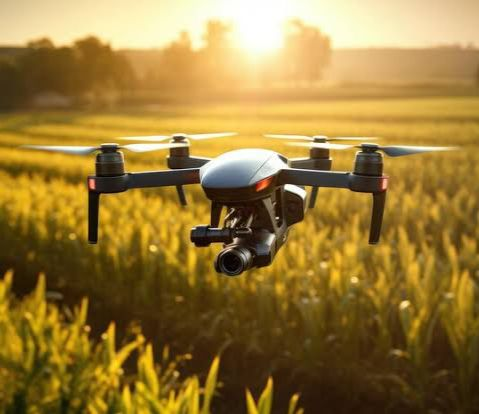
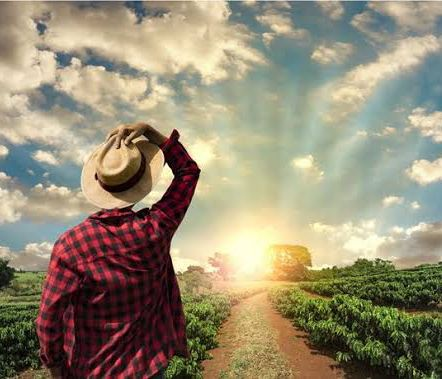

Crie novas memorias com nossas experiencias personalizadas

Startups agrícolas

I.A na agrícultura

Oportunidades no meio rural
Startups agrícolas
I.A na agrícultura
Oportunidades no meio rural
Além de gestor do negócio,é possível atuar como vendedor dos produtos produzidos, prestar consultoria e até desenvolver ferramentas que auxiliam nas atividades rurais. É também atuar com as mãos diretamente na terra, no manejo do gado e na administração da propriedade, coisa comum na agricultura familiar.